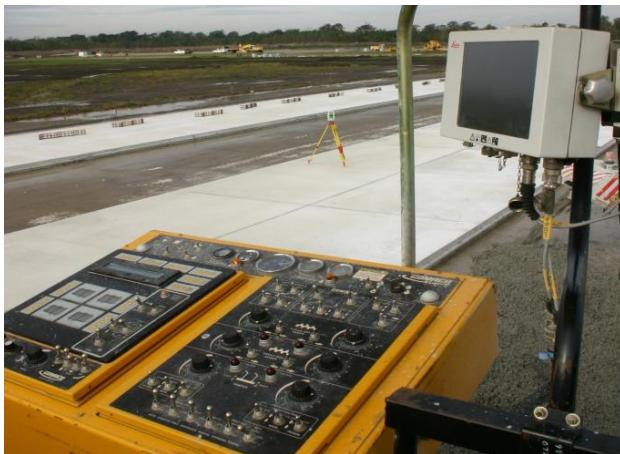
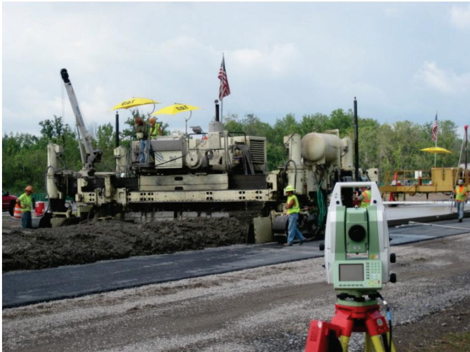
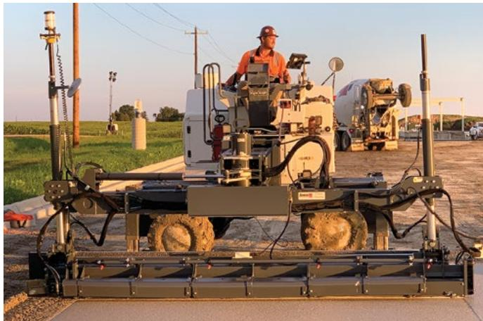
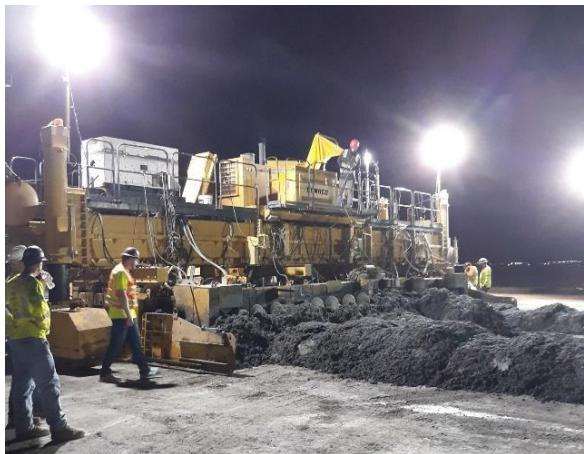

Concrete Mixing and 3D Modeling
Concrete mixing and three‑dimensional modeling is an integrated construction methodology that couples a calibrated, moisture‑compensated batching plant with a computer‑generated pavement model to produce concrete mixes that consistently meet design specifications while being placed at precisely the intended elevations. The process eliminates batch variability through daily plant calibration, proportion verification by the batching control system and extensive quality‑control checklists, and it replaces traditional stringline staking with a robotic total‑station and prism system that provides real‑time three‑dimensional guidance to a laser‑guided screed, continuously checking surface elevations and directing the paver to achieve the required profile. Immediate texturing and curing applied right after placement further limit water loss and early‑age cracking, delivering smoother, waste‑reduced pavements with enhanced safety and drainage performance[2][9][10].
Sources (10)
Purpose and applicability
The combined concrete‑mixing and 3‑D modeling approach solves the core problem of variability and inaccuracy that traditionally leads to non‑conforming mixes, uneven pavement geometry, excess waste, and safety hazards. “The concrete mixing process is designed to eliminate variability in the batch so that every mix meets the required specifications”, using calibrated plant equipment, moisture compensation for aggregate water, verification of proportions by the batching control system, and extensive QC measurements with checklists and corrective actions for any non‑conformance. At the same time, “Integrating a computer‑generated three‑dimensional pavement model with laser‑guided screed equipment solves the problem of accurately placing concrete at design elevations while limiting waste” and replaces less accurate string‑line techniques. “The method replaces traditional stringline staking on slip‑form concrete pavers with a robotic total‑station and prism system that provides real‑time three‑dimensional guidance”, thereby eliminating the chord effect of stringline pins and the logistical complications of laying and maintaining strings, as well as mitigating hazards such as loss of line‑of‑sight. By establishing control points on site, “the system continuously checks surface elevations and directs the screed to achieve the required profile”, which reduces labor and material consumption and ensures proper drainage. This real‑time guidance “directly addresses the problem of inconsistent pavement smoothness that arises from stringline‑based control” and allows the paver to follow a precise 3‑D model, maintaining a uniform concrete head without interruptions caused by misplaced or shifted strings. Immediate texturing and curing applied right after placement further curb water loss and early‑age cracking, especially in thin slabs. [2][9][10]
The following figure illustrates the key components of this stringless control system used to guide the paving equipment.

Stringless control components used for guiding a paving machine. [2]The image displays the hardware interface of a stringless control system, featuring an on-board computer with a display screen and a complex operator console filled with switches and dials mounted to a vehicle frame. In the background, a robotic total station is set up on a tripod in an open field adjacent to a paved surface.
[2] — Ch. 4 (pp. 167–169); [9] — Advantages of Using Laser-Guid… (pp. 41–42); [10] — Stringless Controls (pp. 36–38)
Concrete mixing combined with three‑dimensional modeling should be used when the project meets both scale and technical criteria. It is appropriate for large parking‑lot pours whose width exceeds roughly one hundred feet, allowing laser‑guided screeds to reference the designer’s 3D surface model for elevation verification, material‑quantity control, and immediate texturing that reduces water loss and early cracking. In addition, 3D machine‑control is suitable only when a robotic total station can maintain an uninterrupted line‑of‑sight to the prism on the slipform paver, the distance remains within the accuracy range, environmental conditions such as wind, fog, dust or direct sunlight do not disturb the signal, and all hardware, software, wiring and power are functioning per the manufacturer’s procedures with pre‑paving IRI checks completed. When either the pour width does not reach the large‑scale threshold or any of the line‑of‑sight, distance, environmental or system‑integrity conditions cannot be guaranteed, the advantage of 3D control diminishes and a conventional stringline control method should be employed instead. [9][10]
The following figure illustrates how real-time profile data reflects fluctuations in the International Roughness Index as the distance between the paver and the robotic total station varies.
 Real-time profile data illustrating fluctuation of IRI corresponding to distance from the paver to the robotic total station [10]
Real-time profile data illustrating fluctuation of IRI corresponding to distance from the paver to the robotic total station [10]
The figure displays a graph plotting International Roughness Index (IRI) against distance, comparing surface profiles for the right and left sides of a pavement. Vertical dashed lines mark specific intervals along the distance axis where significant peaks in roughness occur, indicating localized variations in the concrete surface profile. This data illustrates a potential issue with 3D machine control technology that can affect concrete pavement smoothness during construction operations.
[9] — Advantages of Using Laser-Guid… (pp. 41–42); [10] — Stringless Controls (pp. 36–38)
Required inputs
The guides specify that paving concrete must be sourced from a central or ready‑mix plant that is certified for batch production. Batching is performed by measuring the constituent ingredients by mass or volume according to the approved mixture design. The resulting mix must retain its slump and resist segregation during transport so it can be consolidated by the slip‑form paver’s vibrators at a compatible speed; the paving machine is required to maintain a forward motion of at least the minimum specified rate (2.5 ft/min) with typical speeds between 3 and 7 ft/min. Slip‑form operations call for a low‑slump mixture that will not slough after extrusion, whereas fixed‑form placements rely on a higher‑slump mix that flows readily into forms. When site congestion prevents on‑site production, the mix design must accommodate longer haul and placement times. Aggregate moisture in stockpiles is controlled to prevent segregation, and alternative mixtures are selected when temperature or material conditions change. The estimated mixture temperature at placement is monitored together with on‑site weather conditions so that hot‑ or cold‑weather specifications and protective measures can be applied. Continuous delivery is required; therefore planning must consider speed limits, haul‑road condition, active runway or taxiway crossings, backing movements, truck discharge times, weather, possible equipment breakdowns, and maximum haul times to keep travel time short enough that slump loss is minimized. [2][5][8]
[2] — Ch. 5 (pp. 247–249); [5] — Construction (pp. 24–26); [8] — App. D (pp. 126–127)
The design details, dimensions, tolerances, and pre‑construction tests that govern concrete mixing and three‑dimensional machine control are summarized as follows. Mix proportions must satisfy the limits set by ASTM C94/AASHTO M 157: the water‑to‑cement ratio, slump, and mixing or agitating time (or drum revolutions) may not exceed their maximum allowable values, and any remix requires a minimum of 30 revolutions at mixing speed until uniformity is achieved. Plant calibration and daily inspection of all weighing and batching equipment are required, with verification of mixture proportions by the batching control system and moisture compensation for free water in the aggregates performed before each batch.
Placement‑method specific slump requirements are prescribed: slipform paving requires a low‑slump mixture that will not slough after extrusion, while fixed‑form paving relies on a higher slump mixture that will flow easily to fill the forms. Contraction joints must be formed or saw‑cut promptly to a depth equal to one‑third of the pavement thickness.
Equipment set‑up tolerances include adjusting the extrusion pan to the required width and cross‑slope/crown, and setting machine height relative to the control string so that the finished pavement thickness meets design. A pre‑construction trial run of approximately 50 ft is performed on the reference line (or in the appropriate stringless mode) to recheck alignment, elevation, and crown/cross‑slope before full production. The three‑dimensional machine‑control system must be verified against the design model; tools are used to calculate the International Roughness Index (IRI) of the proposed surface and confirm it meets smoothness criteria. Site control points are established so that the computer on the screed equipment uses the model to check surface elevations and place the concrete at the proper heights.
Vibrator performance is checked, with specifications for size, rating, spacing, height/orientation, and real‑time monitoring required. Tie‑bars, construction joint tie bars, and load‑transfer dowels must have their location, insertion depth, alignment, spacing, and offset verified before placement. Batch plant certification and mixer efficiency testing are also part of the pre‑construction coordination.
Operational limits for the 3‑D control hardware are defined: acceptable distance between the robotic total station and the paver, clear line‑of‑sight to the prism, and stability under wind; any radio, software, hardware or power fault is treated as a critical system error. [1][2][5][6][8][9][10]
The following figure illustrates stringless paving using a robotic laser and radio communication.

Stringless Paving Using a Robotic Laser and Radio Communication [8]The image displays a large concrete paver operating on a roadway with workers in high-visibility gear, illustrating the placement phase of pavement construction. In the foreground, a robotic total station is mounted on a tripod, serving as the surveying instrument that provides real-time three-dimensional guidance to the paving equipment. This setup demonstrates stringless controls where models are used for fine grading and machine control without traditional physical stringlines.
[1] — Ch. 8 (pp. 233–234); [2] — Ch. 4 (pp. 167–169); [5] — Construction (pp. 24–26); [6] — Ch. 4 (p. 61), App. C (p. 126); [8] — App. D (pp. 126–127); [9] — Advantages of Using Laser-Guid… (pp. 41–42); [10] — Stringless Controls (pp. 36–38)
Equipment and personnel
Preparation begins with a calibrated batching plant that undergoes “Plant calibration and daily inspection – including weigh scales and all other equipment” to ensure correct mix proportions, complemented by “Batch plant certification and mixer efficiency testing” for verification of plant performance. Machine‑control methods such as “Stringline” (or equivalent 3‑D positioning) are used to locate the grout box head, while stockpile control and traffic planning rely on “Concrete haul route identification and estimated truck number needed for existing traffic along the route.”
Placement uses only approved transport means: “nonagitating equipment, conforming to ASTM C94, be used to transport concrete (truck mixers are not allowed).” The primary placement device is a “Paving machine”, with slip‑form operations employing “Slipform pavers, curing machines, concrete saws, test equipment, and other equipment must meet the specification requirements.” For projects that include drainage layers an “A material transfer vehicle (MTV) (Figure 5.18) with a swing conveyor is required for all DOD projects that include a drainage layer.” When specified, a “Tamper bar, if used” may be applied during placement.
Compaction and consolidation are achieved with vibrators whose detailed parameters are prescribed. One guide specifies “Vibrators 5.4.5.4.1 Size 5.4.5.4.2 Rating 5.4.5.4.3 Spacing (determined how – by spec maximum or rheology of concrete 5.4.5.4.4 Height and orientation 5.4.5.4.5 Frequency and amplitude 5.4.5.4.56 Real-time monitoring,” while another lists “Vibrators 5.4.3.4.1. Size 5.4.3.4.2. Rating 5.4.3.4.3. Spacing 5.4.3.4.4. Height and orientation 5.4.3.4.5. Real-time monitoring.” Additional consolidation may employ “gang‑mounted vibrators with adjustable depths” and is verified through “Vibrator testing/consolidation issues.”
Finishing employs both mechanized and manual tools: “Machine finishing” and “Hand finishing” are used together with “Burlap or turf drag” to achieve the required surface texture. Dedicated “Curing and texturing equipment, rates and construction procedures” support final surface preparation and edge‑slump control.
Curing is controlled by timing and application rate as defined in “Curing 5.4.6.1. Timing 5.4.6.2. Application rate,” with the same curing machines referenced during placement providing consistent moisture retention.
Testing includes the use of “concrete saws” and broader “test equipment” for dimensional checks, while surface quality is monitored through “Smoothness measurements 5.4.8.1. Timing.” Mixer performance continues to be validated by “Batch plant certification and mixer efficiency testing,” and vibrator effectiveness is confirmed via “Vibrator testing/consolidation issues.” [2][6][8]
The following figure illustrates a clean mixer drum and blades with minimal wear.
 Interior view of a clean concrete mixer drum with yellow blades. [2]
Interior view of a clean concrete mixer drum with yellow blades. [2]
The image displays the interior of a rotating drum containing several large, yellow mixing paddles or blades arranged radially around a central opening. This equipment is used for trial batches to determine plastic physical properties and ensure uniformity in concrete mixtures.
[2] — Ch. 4 (pp. 167–169), Ch. 5 (pp. 204–211); [6] — App. C (p. 126); [8] — App. D (pp. 126–127)
Equipment operators should be trained in the proper use of equipment, routine inspection protocols, and reporting procedures for any issues encountered. The QC Manager should ensure that the slipform paving machine is properly adjusted for elevation by verifying that the stringline or 3D control system is correctly set up and calibrated to match the specified design grade. QC technicians that monitor the pavement slab using straightedge tools must understand the geometry of a slipform mold or pan. The QC Manager should also confirm with the paver operator that the machine’s hydraulic controls, grade sensors, and automatic adjustments are functioning correctly to prevent deviations in elevation. Ideally, the paver should move at a uniform speed. It is the paver operator’s responsibility to adjust the paver speed to match the delivery rate of concrete. Vibrator frequency should also be adjusted with the paver speed. These adjustments should be made by experienced personnel. Communication between the paver operator and the personnel involved in the dumping/spreading operation is vital. The paver operator should adjust the speed and following distance to find the best compromise between reacting to changes in concrete head and minimizing paver stops. Line of sight issues between the robotic total station and the prism mounted on the paver. 3D system errors (radio, software, hardware, wiring, batteries, etc.). [2][8][10]
The following figure illustrates potential sensor control issues that can arise during stringline paving operations.
 Sensor control issues with stringline paving (ACPA 2013). [2]
Sensor control issues with stringline paving (ACPA 2013). [2]
The figure illustrates three distinct operational failures of a grade sensor interacting with a tensioned stringline: the sensor following a sagging string, losing contact due to clearance issues, and pulling the string when it is not properly tensioned.
[2] — Ch. 5 (pp. 204–211); [8] — 5. Plant Site and Mixture Prod… (p. 72); [10] — Stringless Controls (pp. 36–38)
Work sequence
The guides agree that before any concrete mixing or 3‑D‑model‑driven paving can start, verified material sources and supplier‑provided CQCPs must be secured, aggregate stockpiles must be managed with proper handling, sampling and moisture control, and the plant—including weigh scales and all batching equipment—must be calibrated and inspected daily. Approved mixture designs that account for placement method and weather adjustments and include defined batching sequence, mixing time, proportion verification by the control system, and moisture compensation for free water in the aggregates must be completed and documented. The contractor must also complete pre‑mixing preparations identified in the preconstruction conference: Identification of central mix or ready mix supply source, Stockpile management to eliminate segregation, Batch plant certification and mixer efficiency testing, and Anticipated plant production rates; additionally, concrete haul routes, truck requirements, expected production rates, alternative mixes for weather changes, aggregate moisture checks, and wash‑out area designation must be planned. Prior to implementation, agencies are encouraged to discuss software capabilities with vendors and designers must understand how the 3‑D information they provide to contractors can be used, establishing accuracy, QA expectations, and intended file uses. At the site, once control points are set at the parking lot site, the laser‑guided screed’s computer can lock onto the computer‑generated three‑dimensional (3D) model of the pavement surface provided by the designer. Finally, the digital pavement model must be validated—tools are available for calculating the IRI of the 3D model before paving, and using these tools is highly recommended to identify any issues with the model before paving begins—and the system manufacturer’s procedures should be adhered to. [2][4][8][9][10]
The following figure illustrates why proper plant set-up and maintenance are critical to providing uniform concrete.
 A large industrial concrete batching plant with a central mixer and structural support framework. [8]
A large industrial concrete batching plant with a central mixer and structural support framework. [8]
The image displays a heavy-duty concrete mixing facility featuring a large, cylindrical central mixer mounted on a steel frame alongside an aggregate hopper system.
[2] — Ch. 4 (pp. 167–169); [4] — Ch. 3 (p. 43); [8] — App. D (pp. 126–127); [9] — Advantages of Using Laser-Guid… (pp. 41–42); [10] — Stringless Controls (pp. 36–38)
After the laser‑guided screed places the concrete using the three‑dimensional model, the surface must be textured and cured right away; any delay can increase water evaporation and raise the risk of early‑age cracking, especially on thin slabs. The guidance does not give a numeric interval but stresses that curing be performed immediately after placement to satisfy the timing requirement. [9]
The following figure illustrates the laser-guided screed used for this precise concrete placement.

A laser-guided screed machine in operation on a concrete pavement. [9]The image displays a large piece of construction machinery, identified as a laser-guided screed, positioned on a freshly placed concrete surface with an operator seated at the controls. This equipment is used to place concrete to proper elevations by utilizing a computer-generated three-dimensional model of the pavement surface. The integration of this 3D profile software with laser-guided equipment allows for precise construction of pavements while helping control material amounts.
[9] — Advantages of Using Laser-Guid… (pp. 41–42)
Staging and logistics
The guides keep work zones orderly by “Concrete mixing and paving operations keep work zones orderly by following the detailed paving schedule and machine‑setup procedures, using a 3D‑based machine control method to guide placement and strike‑off while continuous QC checklists and visual inspections enforce action limits.” Material delivery is coordinated through strict haul‑route maintenance; as described, “Material delivery is coordinated through strict haul‑route maintenance and cleanout of hauling units, ensuring that access routes remain clear and traffic is staged according to the paving sequence before opening to construction traffic.” Stockpiles are controlled under a dedicated program, with the source stating: “Aggregate stockpiles are managed under a dedicated stockpile management program that monitors moisture variability and uses calibrated plant scales for accurate batching, with any non‑conformance triggering corrective actions per the QC plan.” Equipment movement follows prescribed procedures: “Equipment movement is supported by documented breakdown procedures and timing constraints for placement, ensuring that mixers, vibrators and curing equipment remain within the planned zone.” [2][8]
[2] — Ch. 4 (pp. 167–169); [8] — App. D (pp. 126–127)
“wide placements can be utilized, i.e., pour areas that have a width of over 100 ft” to accommodate laser‑guided screeds and subsequent texturing equipment. Before concrete is placed, “Once control points are set at the parking lot site, a computer on the screed equipment uses the model to check surface elevations and place the concrete to the proper elevations.” The site must also allocate areas for stockpiles and cleaning; “Haul units should be cleaned to remove dried concrete and other contaminants, and an adequate washout area should be provided and maintained.” Haul‑road layout must be “compatible with project haul road conditions,” yet “soft and muddy conditions” can reduce the “Average speed of haul units, considering urban routes with multiple stops and traffic impacts.”
Site‑access constraints are pronounced in dense environments: “densely populated urban areas require careful evaluation to determine whether traffic delays will hamper concrete delivery.” Planning must evaluate “the number of available haul trucks…speed limits, haul road conditions, active runway or taxiway crossings, backing movements required, truck discharge times, weather, and possible equipment breakdowns.” When travel time lengthens, “Extra trucks may be needed as the haul time increases,” and the paver must maintain at least a “minimum forward motion of 2.5 feet per minute (UFGS 2024). Typical paving speed is 3 to 7 feet per minute” to avoid interruptions.
Weather imposes explicit adjustments: “6.1 Hot weather paving,” “6.2 Cold weather paving,” and “6.3 Imminent rain” each trigger specific mix modifications, protective coverings, and curing actions. High evaporation—“6.4 Evaporation rates above 0.2 lb/yd2/hr”—requires immediate moisture‑retaining curing to prevent early‑age cracking. In cooler conditions, “Adjustments for cool or falling temperatures are less critical with respect to the w/cm ratio and strength,” but operators often add “Heated water is a common mix adjustment when cooler temperatures occur” and may need “Consistent cool temperatures…the addition of an accelerating admixture to minimize the risk of random cracking due to delayed sawing operations.” When temperature extremes arise, “Consideration of alternative mixtures to meet weather changes” and “Hot/cold weather specifications and precautions” guide mix selection, while “On site weather condition monitoring - Who and how it entered into the decision to pave and cover or not to pave” determines whether concrete must be covered.
Environmental factors further affect mixing and 3‑D control. A surface finish is applied for wet conditions: “Texture is applied to the surface of the concrete after placement and before curing. The purpose is to increase friction and improve wet weather driving conditions.” Reliable three‑dimensional machine control depends on an uninterrupted visual link; any “Line of sight issues between the robotic total station and the prism mounted on the paver,” including “Direct sunlight on the prism,” “Heavy fog and mist,” or “Excessive dust,” can degrade positioning accuracy. [1][2][5][6][8][9][10]
The following figure illustrates the burlap drag textures applied to concrete surfaces for improved friction and wet weather conditions.
 A close-up perspective view of a concrete pavement surface featuring a uniform burlap drag texture. [2]
A close-up perspective view of a concrete pavement surface featuring a uniform burlap drag texture. [2]
The image displays a wide expanse of light gray concrete pavement with a distinct, linear fibrous pattern running longitudinally across the surface. The timing for this operation must be carefully managed so that drag textures are not applied until the bleed water is no longer visible on the pavement surface.
[1] — Ch. 8 (pp. 232–234); [2] — Ch. 4 (pp. 167–169), Ch. 5 (pp. 247–249); [5] — Construction (pp. 24–26); [6] — Ch. 4 (p. 74), App. C (p. 126); [8] — App. D (pp. 126–127); [9] — Advantages of Using Laser-Guid… (pp. 41–42); [10] — Consistent Delivery of Concret… (pp. 28–29), Stringless Controls (pp. 36–38)
Quality control and acceptance
The inspection checklist for concrete mixing and 3D‑controlled paving requires verification of a series of quantitative and qualitative characteristics. For the mix itself the guides require that the “Maximum allowable water/cement ratio is not exceeded”, that the “Maximum allowable slump is not exceeded”, and that “Maximum allowable mixing and agitating time (or drum revolutions) are not exceeded”. If remixing is needed, the concrete must be remixed for a minimum of 30 revolutions at mixing speed or until uniformity meets the limits described in ASTM C94/AASHTO M 157. Plant calibration and daily inspection of all weighing and batching equipment must be confirmed, along with “Verification of mixture proportions used by the batching control system”, proper mixing time, and moisture compensation for aggregate water content. Batch plant certification and mixer efficiency testing, as well as the moisture condition of aggregate stockpiles, are also inspected.
Before placement the surface is checked for smoothness, stability and appropriate moisture, and elevation conformity is confirmed by comparing the actual surface to the three‑dimensional model with laser‑guided screed verification. The integrity and accuracy of the 3D profile software and of the robotic total‑station system must be verified; this includes correct distance from the paver, an unobstructed line‑of‑sight to the prism, low wind conditions, and full functionality of radio, software, hardware, wiring and batteries. Model geometric accuracy and a formal quality‑assurance check are required prior to release.
The slip‑form paver’s mechanical and electrical systems must operate correctly and hydraulic lines be leak‑free; the extrusion pan width, cross‑slope and crown shape are set to design values, and the machine is aligned parallel to the stringline at the proper height for the specified pavement thickness. Tie‑bar inserters, curb molds and all inserted steel components (contraction joint tie bars, construction joint tie bars, load transfer dowels) must match design locations, alignment, spacing and offset.
Vibration and consolidation are inspected for size, rating, spacing, orientation, frequency, amplitude and real‑time performance; low‑frequency vibration paired with a forward paver speed of 3–7 ft/min is required to avoid honeycombing, air voids, vibrator trails or over‑vibration that could strip entrained air. Concrete head level in the grout box and any tamper bar are controlled, and mix duration is monitored for segregation, bleeding or poor finishability.
Finally, temperature, maximum allowable haul time, thickness achieved during placement, straight‑edge and edge slump tolerances, and early‑age conditions such as plastic shrinkage cracking, joint spalling or full‑depth cracking are observed to ensure compliance with hot/cold weather specifications. Curing is checked promptly after placement to prevent water loss and early‑age cracking, and the IRI of the 3D model is calculated before paving to detect modeling errors that could affect smoothness. [1][2][4][6][8][9][10]
[1] — Ch. 8 (pp. 233–234); [2] — Ch. 4 (pp. 167–169), Ch. 5 (pp. 247–249); [4] — Ch. 3 (p. 43); [6] — Ch. 4 (p. 61), App. C (p. 126); [8] — App. D (pp. 126–127); [9] — Advantages of Using Laser-Guid… (pp. 41–42); [10] — Stringless Controls (pp. 36–38)
The acceptance criteria for concrete mixing and placement require that the mix maintain the maximum allowable water‑to‑cement ratio, the maximum allowable slump, and the maximum allowable mixing and agitating time (or drum revolutions) as defined by the specifications. Concrete must be remixed for a minimum of 30 revolutions at mixing speed or until the uniformity of the concrete is within the limits described in ASTM C94/AASHTO M 157. Paving operations must keep the paver moving forward at least the minimum forward motion of 2.5 feet per minute and generally within the typical paving speed of 3 to 7 feet per minute. Any visible defect such as honeycombing, air voids, vibrator trails, segregation, plastic shrinkage cracking, edge slump, joint spalling or full‑depth cracking is considered non‑conforming. When these thresholds are exceeded, corrective actions include stopping the addition of water, adjusting temperature with heated water or an accelerating admixture, re‑mixing the batch as specified, immediately halting paving and shutting down vibrators, and then adjusting equipment (paver speed, vibrator frequency) or the concrete mix to eliminate the defect. Further treatment of defects follows the project‑specified procedures for plastic shrinkage cracking, edge slump, joint spalling, and full‑depth cracking. [1][2][8]
The following figure illustrates early-age cracking, a common defect that may result from exceeding these specified thresholds.
 Diagram of early-age cracking types in concrete pavement. [1]
Diagram of early-age cracking types in concrete pavement. [1]
The figure illustrates various forms of distress on a concrete slab, including map cracking (crazing), plastic shrinkage cracks, random longitudinal and transverse cracks, corner breaks, and contraction joints.
[1] — Ch. 8 (pp. 233–234); [2] — Ch. 5 (pp. 247–249); [8] — App. D (pp. 126–127)
Safety and environmental controls
The guides outline worker hazards that arise from concrete head control, auger condition, and 3D machine‑control systems during slip‑form paving. An excessively high concrete head generates a pressure increase beneath the paving machine, producing a surge that can cause loss of traction and steering, exposing operators to sudden instability or collision risk. Conversely, insufficient material ahead of the machine allows the grout box to run empty, creating low spots, voids, or surface bumps that also threaten worker safety. Worn or broken auger/spreader components prevent even concrete spread and make head‑height control difficult; if unchecked this can overload the front of the machine and result in a loss of traction or “spinning out,” endangering the operator and nearby personnel. Failure to grease bearing seals permits grout to penetrate the auger bearings, degrading performance and potentially causing severe damage and injury. The use of 3‑D machine‑control adds further hazards: line‑of‑sight obstructions between the robotic total station and the paver’s prism—such as other equipment, direct sunlight, heavy fog, mist or excessive dust—degrade positioning signals and can lead to pavement misplacement. High winds may shift the total‑station antenna or the prism, creating sudden movements that endanger workers near the equipment. Additionally, any failure in the 3‑D system’s radio, software, hardware, wiring, or batteries can produce erroneous positioning data, increasing accident risk. Across the sources, no specific public hazards are identified. [1][3][10]
[1] — Ch. 8 (pp. 232–233); [3] — 2 Overview of Concrete Pavemen… (pp. 30–31); [10] — Stringless Controls (pp. 36–38)
Curing, protection, and handoff
After concrete placement, finishing and texturing, the guides require that “a dedicated curing machine applies a protective cure in accordance with the timing and application‑rate requirements set out in the quality‑control plan.” Forms must remain on the slab for at least twelve hours “to protect the edges from spalling and dowel‑bar damage,” but “cannot remain longer than twenty‑four hours because delayed removal harms curing of the vertical faces.” Once forms are stripped, “the exposed sides must be sprayed with a curing compound within thirty minutes” to retain moisture. Curing “must begin as early as possible to stop rapid moisture loss and allow full cement hydration,” and “the crew applies a curing method—such as water spray or fog, wet burlap sheets, plastic sheeting, insulating blankets, or most commonly a liquid membrane‑forming compound—and maintains it until enough hydration has occurred for the pavement to reach its required hardened properties.” The treatment is applied “at the specified application rate and within the timing window defined in section 5.6, ensuring the surface remains protected from premature moisture loss and early‑age cracking.” In adverse weather the contractor must “select and apply specific methods and materials that shield the fresh pavement from adverse weather such as rain, snow or extreme temperature swings,” using “designated curing and texturing equipment operated at the prescribed rates.” Additionally, “mobile texturing and curing equipment is brought in to apply a curing material directly to the fresh surface,” and “the curing operation occurs immediately after placement, sealing the pavement, limiting water loss and thereby reducing early‑age cracking.” The guides note that “timely curing is especially critical on thinner pavements,” and the protective period continues until the concrete achieves the strength and durability required for service. [2][5][6][8][9]
[2] — Ch. 4 (pp. 167–169), Ch. 5 (pp. 274–275); [5] — Construction (pp. 24–26); [6] — App. C (p. 126); [8] — App. D (pp. 126–127); [9] — Advantages of Using Laser-Guid… (pp. 41–42)
Expected performance and maintenance
The guides identify several recurring distresses that arise when concrete mixing, placement, and 3‑D machine control are not tightly managed. An over‑filled grout box raises the concrete head; If the head gets too high, it creates a pressure increase under the paving machine and the resulting surge can deform the finish pan – The surge can cause the concrete behind the machine’s finish pan to swell, creating an uncorrectable surface bump. Conversely, when the head is depleted the paver may run out of material, producing low spots, voids or a complete stop in work.
Vibration and speed coordination are another critical source of failure. excess vibration can result in over or under consolidation by vibration which can also result in problems such as loss of entrained air, vibrator trails, or segregation of the concrete mixture. Both insufficient and excessive consolidation manifest as honeycombing, air voids, surface cracking, or plastic‑shrinkage cracks, especially when temperature or curing conditions drift from specifications.
Mixing irregularities generate segregation, bleeding, and poor finishability; these are typically corrected by adjusting mixing time. Inadequate equipment preparation—dried concrete on the deck, unchecked hydraulic/electrical systems, or fluid leaks—adds thickness variations, misalignment, and weak tie‑bar placement.
Temperature‑related distresses such as plastic shrinkage cracking, excessive edge slump, joint spalling and full‑depth cracking are linked to improper vibration, mix deviations, or curing outside tolerance limits.
When 3‑D control is employed, signal integrity must be maintained. Line of sight issues between the robotic total station and the prism mounted on the paver and high winds that shift either instrument can cause profile deviation and increased roughness. Additional system faults—radio, software, hardware, wiring or battery failures—produce similar alignment errors.
Collectively, these failure modes underscore the need for continuous monitoring of concrete head, vibration parameters, mix quality, equipment condition, environmental controls, and 3‑D system integrity to prevent surface defects, structural weaknesses, and operational stoppages. [1][2][6][8][10]
[1] — Ch. 8 (pp. 232–234); [2] — Ch. 5 (pp. 247–249); [6] — Ch. 4 (p. 61); [8] — App. D (pp. 126–127); [10] — Stringless Controls (pp. 36–38)
The preventive maintenance program for concrete mixing and 3D‑controlled slip‑form paving is built on daily equipment checks, routine cleaning, calibration of batching systems, and continuous performance monitoring. Operators must keep the grout box material continuously refreshed and ensure the head level fully covers the vibrators, which are set at a slight downward angle, while never exceeding the prescribed water‑to‑cement ratio; if slump falls short the mix is remixed for at least thirty drum revolutions. All plant equipment—including weigh scales, mixers and hydraulic components—requires daily calibration and inspection, and batch‑plant certification with mixer efficiency testing must be documented. Haul routes are maintained and hauling units are regularly cleaned; trucks receive a wash‑out after each shift to remove hardened concrete and preserve cycle times. Front‑mounted augers or spreaders are inspected for wear at the start of the season and periodically thereafter, bearing seals are greased according to manufacturer guidance, and any grout intrusion is purged immediately; components are cleaned every day. The slip‑form paver is cleared of dried concrete before each run, mechanical, electrical and hydraulic systems are verified functional, and leaks are repaired promptly. Vibrator spacing, operation and frequency are set correctly and observed in real time; vibrators are also tested routinely to confirm consolidation performance. 3D machine‑control equipment is kept aligned by maintaining the robotic total station within manufacturer‑specified distance from the paver, preserving an unobstructed line of sight, protecting radios, software, hardware, wiring and batteries from high winds, dust or fog, and performing regular inspections of the system. Real‑time monitoring of mixture proportions via the batching control system, as well as continuous observation of smoothness measurements, triggers immediate corrective actions—adjusting mix parameters, haul truck count, paving speed or equipment configuration—when limits are exceeded. Weather and pavement temperature are continuously monitored to decide when protection or placement is appropriate. When any deviation, equipment breakdown, or loss of 3D signal is detected, the documented breakdown procedures call for rapid repair to return the unit to service and sustain a steady concrete supply. [1][2][3][6][8][10]
The following figure illustrates key components involved in consolidating concrete during the paving process.

Nighttime view of a slipform paver consolidating concrete with workers nearby. [2]The image shows a large yellow slipform paving machine operating at night under bright floodlights, with piles of wet concrete visible in the foreground and several workers wearing high-visibility safety gear standing near the equipment.
[1] — Ch. 8 (pp. 233–234); [2] — Ch. 4 (pp. 167–169); [3] — 2 Overview of Concrete Pavemen… (pp. 30–31); [6] — Ch. 4 (pp. 61–74), App. C (p. 126); [8] — App. D (pp. 126–127); [10] — Consistent Delivery of Concret… (pp. 28–29), Stringless Controls (pp. 36–38)